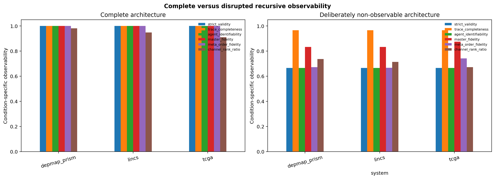
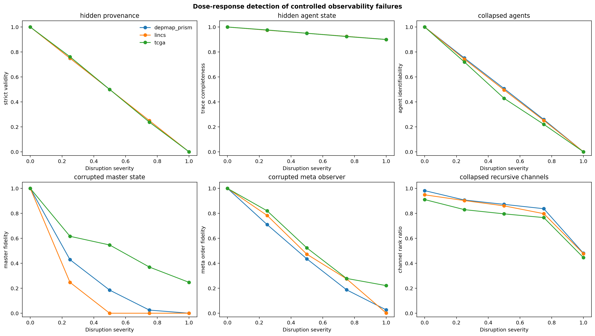
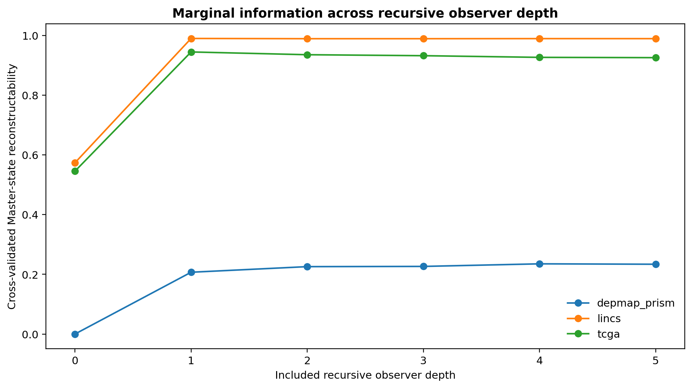
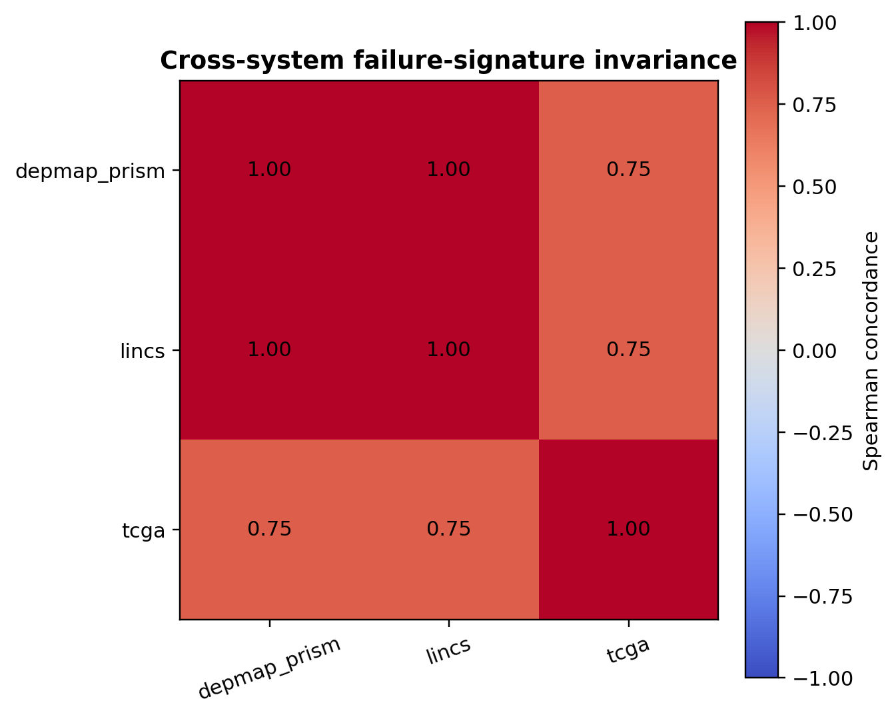

Recursive Scientific Observability Benchmark
Outcome-independent validation of observability using controlled internal-state disruptions.
Results summary
Figures
figure_01_complete_vs_nonobservable

figure_02_disruption_dose_response

figure_03_recursive_depth_information

figure_04_cross_system_invariance

Tables